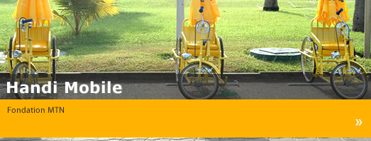

Projet Handi Mobile

MTN Bénin a lancé le Projet Handi Mobile le 17 Juin 2008 au ministère de la Famille et l'Enfant avec des invités dont le Directeur du Cabinet du Ministère, les membres du conseil d'administration de la Fondation MTN Bénin et ses fidèles clients.Au total, 50 personnes handicapées ont reçues un Handi Mobile Pack contenant un tricycle, un téléphone + sim mtn, une veste, un chapeau et un parasol.
A travers ce projet, la Fondation vie à aider les personnes handicapées à mieux gagner leur vie en vendant des crédits.